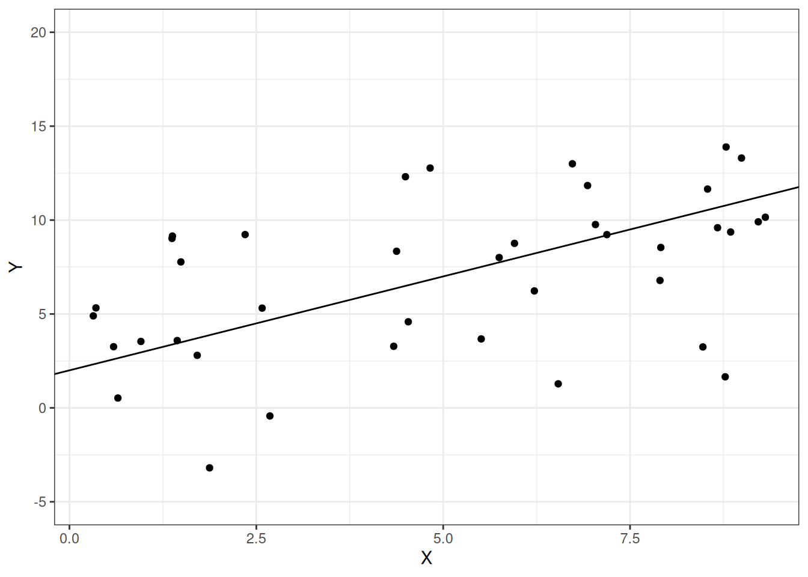
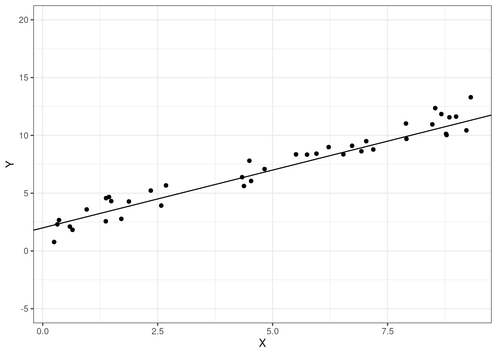
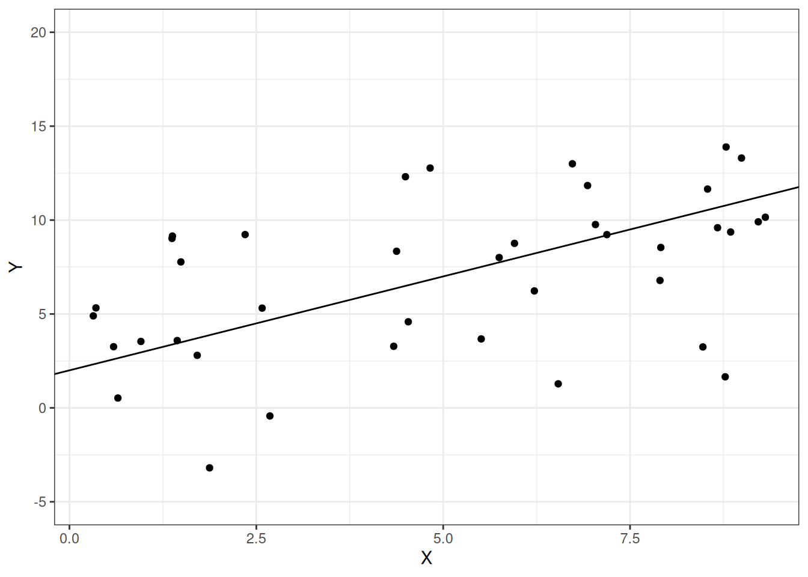
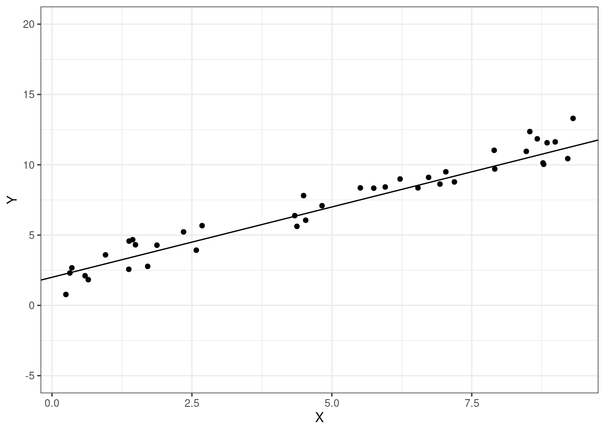

Warning: Removed 1 row containing missing values or values outside the scale range
(`geom_point()`).

\[ \newcommand{\E}{\mathbb{E}} \renewcommand{\P}{\textrm{P}} \let\L\relax \newcommand{\L}{\textrm{L}} %doesn't work in .qmd, place this command at start of qmd file to use it \newcommand{\F}{\textrm{F}} \newcommand{\var}{\textrm{var}} \newcommand{\cov}{\textrm{cov}} \newcommand{\corr}{\textrm{corr}} \newcommand{\Var}{\mathrm{Var}} \newcommand{\Cov}{\mathrm{Cov}} \newcommand{\Corr}{\mathrm{Corr}} \newcommand{\sd}{\mathrm{sd}} \newcommand{\se}{\mathrm{s.e.}} \newcommand{\T}{T} \newcommand{\indicator}[1]{\mathbb{1}\{#1\}} \newcommand\independent{\perp \!\!\! \perp} \newcommand{\N}{\mathcal{N}} \]
In this part of the class, we’ll learn how to use regressions and “machine learning” in order to predict outcomes of interest using available, related data. One key issue when it comes to making predictions is that we typically have lots of possible models that we could use to make the predictions. Choosing which of these models works best, or model selection, is therefore often an important step when it comes to making good predictions.
Another important issue with prediction is a focus on making out-of-sample predictions. We can usually make better within-sample predictions just by making the model more complicated, but this often leads to over-fitting — predictions that are “too specific” to our particular data.
We’ll start this chapter by learning about measures of how well a regression fits the data. Consider the following figure
Warning: Removed 1 row containing missing values or values outside the scale range
(`geom_point()`).

These are exactly the same two regression lines. But we probably have the sense that the regression line in the second figure “fits better” than in the first figure, and, furthermore, that this is likely to result in better predictions of whatever the second outcome is relative to the first one. We’ll formalize this below.
SW 6.4
Let’s start by defining some quantities. These will be useful for quantifying how well the model fits the data.
Total Sum of Squares (TSS) — measures total variation in the data
\[ TSS = \sum_{i=1}^n (Y_i - \bar{Y})^2 \]
Explained Sum of Squares (ESS) — measures variation explained by the model
\[ ESS = \sum_{i=1}^n (\hat{Y}_i - \bar{Y})^2 \]
Sum of Squared Residuals (SSR) — measures “leftover” variation in the data that is not explained by the model
\[ SSR = \sum_{i=1}^n \hat{U}_i^2 = \sum_{i=1}^n (Y_i - \hat{Y}_i)^2 \]
Properties
A first useful property is
\[ TSS = ESS + SSR \]
We will not prove this property though it is a useful exercise and not actually that challenging.
Another useful property is that \(TSS\), \(ESS\), and \(SSR\) are all positive — this holds because they all involve sums of squared quantities.
SW 6.4
\(R^2\) is probably the most common measure of regression fit. It is defined as
\[ R^2 := \frac{ESS}{TSS} \]
so that \(R^2\) is the fraction of the variation in \(Y\) explained by the model. Notice that \(R^2\) is always between 0 and 1 which holds by the two properties of \(TSS\), \(ESS\), and \(SSR\) listed in the previous section.
SW 7.5 (note: we cover substantially more details than the textbook about model selection)
Often, when we want to use data to make predictions, there are multiple possible models that we could estimate to make the predictions. For example, suppose that we are interested in predicting house prices and we have access to data about the number of square feet, whether or not the house has a basement, the number of bedrooms, and the number of bathrooms. All of these are probably good variables to include in a model to predict house prices (though it is less clear if we should include quadratic terms, interaction terms, or other higher order terms). But suppose we also observe some variables that are probably irrelevant (e.g., whether the street number is odd or even) or not clear whether they matter or not (e.g., number of ceiling fans or paint color). It is not clear which variables we should include in the model. An alternative way to think about this is that there would be a large number of possible models that we could estimate here, and it is not immediately obvious which one will predict the best.
From the previous example, it seems that in many realistic applications, there are a large number of possible models that we could estimate to make predictions. How should we choose which one to use?
One idea is to just throw all the data that we have into the model. In many applications, this may not be a good idea. I’ll provide a specific example below.
Before doing that, I want to distinguish between two concepts. Typically, what we mean we say that a model is good at making predictions is that it is a good at making out-of-sample predictions. In other words, some new observation shows up (e.g., a new house comes on the market) with certain characteristics — we would like to be using a model that makes good predictions for this house. This is a distinct concept from in-sample fit of the model — how well a model predicts for the data that it is estimated on. In the context of prediction, one very common problem is over-fitting. Over-fitting is the problem of getting predictions that are too specific to the particular data that you have, but then that don’t work well for new data.
Example: Suppose that you are interested in predicting height of students at UGA. You consider estimating three models
\[ \begin{aligned} Height &= \beta_0 + \beta_1 Male + U \\ Height &= \beta_0 + \beta_1 Male + \beta_2 Year + U \\ Height &= \beta_0 + \beta_1 Male + \beta_2 Year + \beta_3 Birthday + U \end{aligned} \] where \(Year\) is what year in school a student is in (e.g., Freshman, Sophomore, etc.), and \(Birthday\) is what day of the year a student was born on.
You also notice that \(R^2\) is greatest for the third model, in the middle for the second model, and smallest for the first model.
The third model likely suffers from over-fitting. In particular, knowing a student’s birthday may really help you predict height in-sample. For example, suppose that the center on the basketball team is in your sample, and his birthday is July 15. Knowing this, you will likely be able to make a much better prediction for this observation in your data using Model 3 which \(\implies\) that the \(R^2\) will be much higher for this model. But this won’t help you predict well out-of-sample. If a new person shows up whose birthday is July 15, they are unlikely to also be a center on the basketball team which further implies that your prediction of their height is likely to be very poor.
The previous example is about over-fitting with the idea that better in-sample predictions can actually lead to worse out-of-sample predictions.
SW 6.4
\(R^2\) is a measure of in-sample fit. In fact, you can always increase \(R^2\) by adding new variables into a model. To see this, notice that
\[ \begin{aligned} R^2 &= \frac{ESS}{TSS} \\ &= 1 - \frac{SSR}{TSS} \end{aligned} \] When you add a new variable to a model, \(SSR\) cannot increase (see explanation below). Since \(SSR\) cannot increase, it means that \(R^2\) can only increase (or at a minimum remain unchanged) when a new regressor is added to the model.
This means that, if you were to choose a model by \(R^2\), it would always choose the “kitchen-sink” (include everything) model. But, as we discussed above, this is likely to lead to severe over-fitting problems. This suggests using alternative approaches to choose a model for the purposed of prediction.
SW 6.4
Given the above discussion, we would like to have a way to choose a model that doesn’t necessarily always select the most complicated model.
A main way to do this is to add a penalty to adding more regressors to the model. One version of this is called adjusted \(R^2\), which we will write as \(\bar{R}^2\). It is defined as
\[ \bar{R}^2 := 1 - \underbrace{\frac{(n-1)}{(n-k)}}_{\textrm{penalty}} \frac{SSR}{TSS} \] where \(k\) is the number of regressors included in the model (note: we also count the intercept as a regressor here; so for example, in the regression \(\E[Y|X_1,X_2] = \beta_0 + \beta_1 X_1 + \beta_2 X_2\), \(k=3\)). Notice, if the penalty term were equal to 1, then this would just be \(R^2\).
Now, let’s think about what happens to \(\bar{R}^2\) when you add a new regressor to the model.
\(SSR \downarrow \implies \bar{R}^2 \uparrow\)
\((n-k-1) \downarrow \implies \bar{R}^2 \downarrow\)
Thus, there is a “benefit” and a “cost” to adding a new regressor. If you are choosing among several models based on \(\bar{R}^2\), you would choose the model that has the highest \(\bar{R}^2\). And the logic is this: if the regressor greatly decreases \(SSR\), then the “benefit” of adding that regressor will tend to outweigh the “cost”. On the other hand, if the regressor has little effect on \(SSR\), then the “benefit” of adding that regressor will tend to be smaller than the “cost”.
There are other approaches to model selection that follow a similar idea. Two of the most common ones are the Akaike Information Criteria (AIC) and the Bayesian Information Criteria (BIC). These tend to be somewhat better choices for model selection than \(\bar{R}^2\).
These are given by
For both AIC and BIC, you would choose the model that minimizes these.
Another common way to choose a model is called cross-validation. The idea is to mimic the out-of-sample prediction problem using the data that we have access to.
In particular, one simple version of this is to split your data into two parts: these are usually called the training sample and the testing sample. Then, estimate all models under consideration using the training sample. Given the estimated values of the parameters, then predict the outcomes for observations in the testing sample; and compare these predictions to the actual outcomes in the testing sample. Choose the model that minimizes the squared prediction error in the testing sample.
Cross-validation is a somewhat more complicated version of the same idea. Basically, we will repeatedly split the data into a training sample and a testing sample, and get predictions for all observations in our data (instead of just for a held-out testing sample).
Here is an algorithm for cross-validation:
Algorithm:
Split the data into J folds
For the jth fold, do the following:
Estimate the model using all observations not in the Jth fold (\(\implies\) we obtain estimates \(\hat{\beta}_0^j, \hat{\beta}_1^j, \ldots, \hat{\beta}_k^j\))
Predict outcomes for observations in the Jth fold using the estimated model from part (1): \[\begin{align*} \tilde{Y}_{ij} = \hat{\beta}_0^j + \hat{\beta}_1^j X_{1ij} + \cdots + \hat{\beta_k^j} X_{kij} \end{align*}\]
Compute the prediction error: \[\begin{align*} \tilde{U}_{ij} = Y_{ij} - \tilde{Y}_{ij} \end{align*}\] (this is the difference between actual outcomes for individuals in the Jth fold and their predicted outcome based on the model from part (1))
Do steps 1-3 for all \(J\) folds. This gives a prediction error \(\tilde{U}_i\) for each observation in the data
compute the cross validation criteria (mean squared prediction error): \[\begin{align*} CV = \frac{1}{n} \sum_{i=1}^n \tilde{U}_{i}^2 \end{align*}\]
choose the model that produces the smallest value of \(CV\).
Cross-validation is a good way to choose a model, but it can sometimes be computationally challenging (because you are estimating lots of models) — particularly, if the models under consideration are very complicated or there a large number of observations.
Above, we split the data into \(J\) folds. This introduces some randomness into our model selection criteria. In particular, if you split the data in a different way from how I split the data, then we could choose different models. This is a somewhat undesirable feature of a model selection criteria. One way to get around this is to set \(J=n\). This makes it so that every observation has its own fold. This is called leave-one-out cross-validation. In this case, there is no randomness in the model selection criteria. The drawback is that it is more computational — in this case, you need to estimate the model \(n\) times rather than \(J\) times.
In the case where you are considering a large number of possible models, it is pretty common that a number of models will, by any of the above model selection criteria, be expected to perform very similarly when making predictions.
In this case, one strategy that usually does well in terms of making out-of-sample predictions is model averaging.
Suppose you have \(M\) different models, and that each model can produce a predicted value for \(Y_i\) — let’s call the predicted value from model \(m\), \(\hat{Y}_i^m\). Model averaging would involve obtaining a new predicted value, call it \(\hat{Y}_i\) by computing \[\begin{align*} \hat{Y}_i = \frac{1}{M} \sum_{m=1}^M \hat{Y}_i^m \end{align*}\]
\(R^2\) and \(\bar{R}^2\) are both reported as output from R’s lm command.
It is straightforward (and a useful exercise) to compute \(TSS, ESS,\) and \(SSR\) directly. It is also straightforward to calculate \(AIC\) and \(BIC\) — there are probably packages that will do this for you, but they are so easy that I suggest just calculating on your own.
The same applies to cross validation. I suspect that there are packages available that will do this for you, but I think these are useful coding exercises and not all that difficult. Also, if you do this yourself, it removes any kinds of “black box” issues from downloading R code where it may not be clear exactly what it is doing.
Side-Comment: It might not be obvious why \(SSR\) necessarily decreases when a covariate is added to the model. Here is an explanation. Suppose that we estimate two models (I’ll include an \(i\) subscript here and just use \(\beta\) and \(\delta\) to remind you that the parameters are not equal to each other across models)
\[ \begin{aligned} Y_i &= \hat{\beta}_0 + \hat{\beta}_1 X_{1i} + \hat{U}_{1i} \\ Y_i &= \hat{\delta}_0 + \hat{\delta}_1 X_{1i} + \hat{\delta}_2 X_{2i} + \hat{U}_{2i} \end{aligned} \] Recall that, for both models, we estimate the parameters by minimizing the sum of squared residuals (\(SSR\)). Notice that the second model is equivalent to the first model when \(\hat{\delta}_2=0\). In that case, \(\hat{\delta}_0 = \hat{\beta}_0\), \(\hat{\delta}_1 = \hat{\beta}_1\), the residuals would be exactly the same which implies that \(SSR\) would be exactly the same across each model. Now, for the second model, if we estimate some any value of \(\hat{\delta}_2 \neq 0\), the reason why we would estimate that is because it makes the \(SSR\) of the second model even lower.
This discussion means that, if we estimate \(\hat{\delta}_2=0\), then \(SSR\) wil be the same across the first and second model, and that if we estimate any other value for \(\hat{\delta}_2\), then \(SSR\) for the second model will be lower than for the first model.